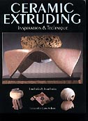

| Ceramic Extruding,
Inspiration and Technique
by Tom & Jean Latka
I would hardly have thought it possible to write such a comprehensive
book on the topic of extruding clay, but Tom and Jean Latka's publication
"Ceramic Extruding, Inspiration and Technique"
proves me wrong. This 140 page, full color, soft cover book deals
with all aspects of the topic, ranging from a history of extruding
to specific formulas for extruding clay bodies through to constructing
your own dies.
Extruding
is a technique that is well suited to clay and perhaps one that
is not afforded enough credit, considering the wide gamut of applications
it can be used for. These range from the pavement brick to the extruded
pitcher or the constructed, multi-part, extruded clay sculpture.
As the clay is extruded, it is compressed, giving it enough structural
strength to withstand even stoneware firings. Various formulas are
offered for plastic clays suitable for extruding and for different
firing temperatures. There is even a formula for a kiln furniture
clay, for those who like to make this sort of thing themselves.
One of the most important aspects of extruding is die construction.
Dies can be purchased from commercial sources, but constructing
your own will enable you to make shapes not available commercially
and will widen the range of possible applications considerably.
A chapter on dies offers knowledgeable and comprehensive advice
on construction theory. How do dies work? How should they be constructed?
How does clay flow through them? Next are how-to instructions for
the potter. What kind of materials are suitable? How do you make
a solid 'coil plus' or hollow die?
This is sound technical advice, but the book does not just tell
you how to make dies and extrude clay. It also explains in great
depth how to use the extruded material. Extruder projects show how
to make platters, bowls, weave coils, attach extruded handles, make
napkin rings, umbrella stands, work through tile projects and more.
A gallery of extruded art offers full color examples of what can
be done, ranging from the monumental wall piece to extruded animal
sculptures and woven clay baskets. Final chapters on common problems
and their solutions and studio safety deal with issues specific
to extruding clay and a final chapter shares some of the authors'
experiences establishing a business in making art.
This is a comprehensive book on the topic of extruding clay, and
certainly a very useful one for the student as well as the established
potter, who would like to delve deeper into this ceramic technique.
More Reviews
|